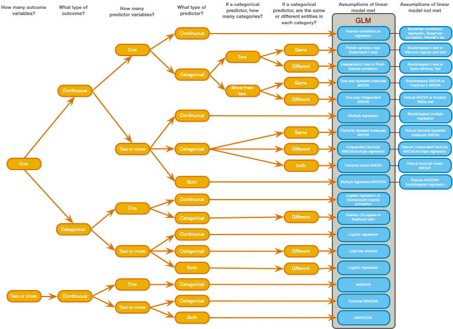
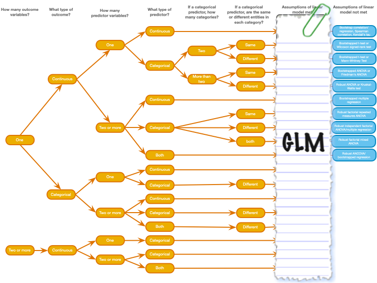

| Organism | Brain chips | Potato chips |
|---|---|---|
| Human | 28 | 42 |
| Zombie | 61 | 57 |
zombie_quiz


|
A zombie quiz
A researcher counted how many humans and zombies choose brain chips or potato chips to accompany their dinner at the university canteen
- How do I analyze these data?
A chi-square test
| Chi2 | df | p | Method |
|---|---|---|---|
| 2.41 | 1 | 0.121 | Pearson's Chi-squared test |
A Spearman correlation?
A Kendall’s \(\tau\) correlation?
A Pearson correlation?
A t-test?
| estimate | estimate1 | estimate2 | statistic | p.value | parameter | conf.low | conf.high | method | alternative |
|---|---|---|---|---|---|---|---|---|---|
| 0.11 | 0.685 | 0.576 | 1.559 | 0.121 | 185.619 | -0.029 | 0.248 | Welch Two Sample t-test | two.sided |
One-way ANOVA?
Linear model (Regression)?
Loglinear model?
Multilevel model?
| Parameter | Coefficient | SE | CI | CI_low | CI_high | z | df_error | p | Effects | Group | Component |
|---|---|---|---|---|---|---|---|---|---|---|---|
| (Intercept) | 0.600 | 0.059 | 0.95 | 0.484 | 0.716 | 10.119 | Inf | 0.000 | fixed | conditional | |
| organism | -0.117 | 0.075 | 0.95 | -0.264 | 0.030 | -1.563 | Inf | 0.118 | fixed | conditional | |
| SD (Intercept) | 0.000 | NA | 0.95 | 0.000 | Inf | NA | NA | NA | random | canteen | conditional |
| SD (Observations) | 0.496 | NA | 0.95 | 0.448 | 0.549 | NA | NA | NA | random | Residual | conditional |

